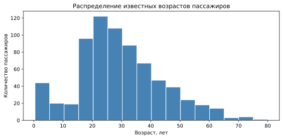
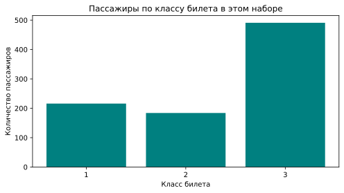

Учимся читать таблицу, выбирать наблюдения и объяснять числа. Не строим модель: сначала понимаем данные.
01Прочитать таблицу
02Проверить и выбрать
03Объяснить результат
Titanic здесь — конкретный учебный набор записей, не полный список пассажиров. Различия групп описывают данные, но сами по себе не доказывают причину.
ОПОРА ПЕРЕД ПРАКТИКОЙ
Число имеет смысл только вместе с вопросом.
Таблица и массив
pandas хранит значения вместе с названиями столбцов и индексом. NumPy работает с массивами: поэлементные вычисления заменяют ручной обход чисел.
Наблюдение и показатель
Одна строка — один пассажир из набора. Среднее возраста полезно; среднее PassengerId не описывает людей. Числовой тип хранения не делает ID измерением.
Среднее: x̄ = Σxᵢ / n Доля пропусков: m / N × 100% Доля единиц в 0/1: Σyᵢ / N
В среднем возраста n — число известных возрастов. В проценте пропусков N — все строки. Перед расчётом назовите знаменатель.
Почему pandas и NumPy могут дать разные числа?
pandas mean пропускает NaN; np.mean распространяет NaN. Для сравнения используйте np.nanmean. У стандартного отклонения pandas по умолчанию ddof=1, у NumPy ddof=0.
s = √( Σ(xᵢ − x̄)² / (n − 1) )
Для [10, 20, 30] среднее и медиана равны 20, выборочная std — 10. В NumPy передайте ddof=1 для того же результата.
INTERACTIVE LAB / БУЛЕВА МАСКА
Как условие выбирает строки
Отдельный демонстрационный массив возрастов: [12, 17, 18, 25, NaN, 40]. Это не статистика Titanic. Меняйте границу и предскажите маску до проверки.
Неизвестный возраст нельзя автоматически отнести ни к детям, ни к взрослым. Граница строгая: при пороге 18 возраст 18 не попадёт в отбор.
NOTEBOOK / 01
1. Подготовка и загрузка
Нужны pandas, numpy, matplotlib и Jupyter/Colab; установка описана в SETUP.md. Запускайте ячейки сверху вниз (Shift+Enter). Для загрузки CSV нужен интернет. Если загрузка не удалась, проверьте соединение и повторите эту ячейку.
Ноутбук сохранён без результатов. Для проверки своей работы используйте Restart Kernel → Run All. Учебные TODO не ломают общий запуск: они оставлены комментариями.
PYTHON / запускайте в notebook по порядку
# Короткие имена библиотек — общепринятое соглашение.
import pandas as pd
import numpy as np
import matplotlib.pyplot as plt
from IPython.display import display
PYTHON / запускайте в notebook по порядку
# Одна строка таблицы — один пассажир в этом наборе данных.
df = pd.read_csv('https://raw.githubusercontent.com/jorisvandenbossche/pandas-tutorial/master/data/titanic.csv')
df.head()
Что означают столбцы
Источник: CSV из pandas-tutorial. Это конкретный набор записей, а не полный список всех находившихся на корабле.
Поле
Значение
PassengerId, Name
Идентификатор и имя пассажира
Survived
1 — выжил, 0 — не выжил
Pclass
Класс билета: 1, 2 или 3; это категория, а не измерение
Sex, Age
Пол в исходной записи и возраст в годах
SibSp, Parch
Число братьев/сестёр/супругов и родителей/детей на борту
Ticket, Fare, Cabin
Номер билета, записанная стоимость, каюта
Embarked
Порт посадки: C — Cherbourg, Q — Queenstown, S — Southampton
Регистр важен: Age и age — разные имена. Пустое значение означает отсутствие информации, а не ноль.
PYTHON / запускайте в notebook по порядку
# Последние строки помогают увидеть конец таблицы.
df.tail(5)
PYTHON / запускайте в notebook по порядку
# Фиксируем random_state: при повторении получим те же строки.
df.sample(5, random_state=42)
PYTHON / запускайте в notebook по порядку
# shape возвращает пару: количество строк, количество столбцов.
print("Строк:", df.shape[0])
print("Столбцов:", df.shape[1])
PYTHON / запускайте в notebook по порядку
# Список названий удобно использовать при выборе колонок.
df.columns.tolist()
PYTHON / запускайте в notebook по порядку
# Тип хранения не всегда совпадает со смыслом признака.
df.dtypes
PYTHON / запускайте в notebook по порядку
# info печатает типы и количество заполненных значений.
# Не оборачиваем в print: метод сам выводит информацию.
df.info()
Остановитесь и ответьте: сколько наблюдений в таблице? В каких колонках заполнены не все строки? Почему среднее значение PassengerId не описывает пассажиров содержательно?
NOTEBOOK / 02
2. Первая описательная статистика
count — число известных значений; mean — среднее; std — стандартное отклонение; min/max — границы. 25%, 50%, 75% — квартиль, медиана и квартиль: они помогают описать расположение значений.
PYTHON / запускайте в notebook по порядку
# По умолчанию describe описывает числовые столбцы.
df.describe().round(2)
PYTHON / запускайте в notebook по порядку
# Выбираем измеряемые величины, а не числовые идентификаторы.
df[["Age", "Fare", "SibSp", "Parch"]].describe().round(2)
PYTHON / запускайте в notebook по порядку
# unique — число разных значений; top — самое частое; freq — его частота.
df[["Sex", "Embarked", "Cabin"]].describe()
PYTHON / запускайте в notebook по порядку
# Среднее и медиана отвечают на разные вопросы о центре распределения.
print("Средний возраст:", round(df["Age"].mean(), 2))
print("Медианный возраст:", df["Age"].median())
print("Минимум и максимум:", df["Age"].min(), df["Age"].max())
Проверьте понимание: сравните среднюю и медианную стоимость. Если они различаются, не объявляйте большие значения ошибками: сначала посмотрите на данные. pandas пропускает отсутствующие значения при этих расчётах; число наблюдений для возраста и стоимости может различаться.
NOTEBOOK / 03
3. Выбираем строки и столбцы
Series — один столбец с индексом; DataFrame — таблица. loc выбирает по меткам, iloc — по позициям с нуля. В loc[0:4] правая метка включается, в iloc[0:4] позиция 4 не включается.
PYTHON / запускайте в notebook по порядку
# Одна пара скобок возвращает Series.
ages = df["Age"]
print(type(ages))
ages.head()
PYTHON / запускайте в notebook по порядку
# Список колонок внутри скобок возвращает DataFrame.
passenger_view = df[["Name", "Age", "Sex", "Pclass"]]
passenger_view.head()
PYTHON / запускайте в notebook по порядку
# В исходной таблице метки индекса начинаются с 0.
df.loc[0:4, ["Name", "Age", "Fare"]]
PYTHON / запускайте в notebook по порядку
# Берём первые четыре строки и первые три столбца по позициям.
df.iloc[0:4, 0:3]
PYTHON / запускайте в notebook по порядку
# Исходный df не меняется: сортировка возвращает новую таблицу.
df.sort_values("Fare", ascending=False)[["Name", "Pclass", "Fare"]].head(10)
PYTHON / запускайте в notebook по порядку
# Сначала класс по возрастанию, внутри класса — возраст по убыванию.
df.sort_values(["Pclass", "Age"], ascending=[True, False])[
["Name", "Pclass", "Age"]
].head(10)
NOTEBOOK / 04
4. Пропуски: считаем до любых изменений
isna() создаёт таблицу из True/False. При суммировании True считается как 1. Не будем удалять все строки с пропусками: отсутствие каюты не мешает посчитать пассажиров по классу.
PYTHON / запускайте в notebook по порядку
# Количество пропусков по каждому столбцу.
missing_count = df.isna().sum()
missing_count.sort_values(ascending=False)
PYTHON / запускайте в notebook по порядку
# Доля пропусков имеет знаменатель: все строки таблицы.
missing_summary = pd.DataFrame({
"missing_count": missing_count,
"missing_percent": missing_count / len(df) * 100,
})
missing_summary.sort_values("missing_count", ascending=False).round(1)
PYTHON / запускайте в notebook по порядку
# Посмотрим на записи с неизвестным возрастом, не меняя df.
df.loc[df["Age"].isna(), ["Name", "Age", "Pclass"]].head()
PYTHON / запускайте в notebook по порядку
# Только отдельная Series без пропусков — для расчётов возраста.
known_ages = df["Age"].dropna()
print("Всего пассажиров:", len(df))
print("Возраст известен:", known_ages.count())
PYTHON / запускайте в notebook по порядку
# Пример заполнения в отдельной переменной, а не в исходной колонке.
age_filled_example = df["Age"].fillna(df["Age"].median())
print("Пропусков в примере:", age_filled_example.isna().sum())
print("Пропусков в исходном Age:", df["Age"].isna().sum())
Заполнение медианой — технический приём, не восстановление истинного возраста. Оно меняет распределение. Дальше описываем исходные известные возраста, а age_filled_example не используем. Заполнять возраст нулём означало бы ошибочно добавить младенцев.
NOTEBOOK / 05
5. Частоты и доли категорий
Сначала считаем количество, затем долю. Всегда называйте знаменатель: все пассажиры, только известные значения или конкретная группа.
# normalize=True переводит количества в доли; умножение на 100 — в проценты.
(df["Sex"].value_counts(normalize=True) * 100).round(1)
PYTHON / запускайте в notebook по порядку
# По умолчанию value_counts исключает пропуски; здесь показываем их явно.
df["Embarked"].value_counts(dropna=False)
PYTHON / запускайте в notebook по порядку
# Для кода 0/1 среднее равно доле единиц.
print("Количество по исходам:")
display(df["Survived"].value_counts().sort_index())
print("Доля выживших в этом наборе, %:", round(df["Survived"].mean() * 100, 1))
NOTEBOOK / 06
6. Простые фильтры
Условие создаёт булеву маску — по одному True/False на строку. Для нескольких условий используем & (И), | (ИЛИ) и скобки вокруг каждого условия. Python and/or здесь не подходят.
# Оставляем строки, где условие истинно.
first_class = df.loc[is_first_class, ["Name", "Age", "Fare"]]
print("Пассажиров первого класса:", len(first_class))
first_class.head()
PYTHON / запускайте в notebook по порядку
# Неизвестный возраст не позволяет отнести человека к детям.
children = df.loc[df["Age"].notna() & (df["Age"] < 18)]
children[["Name", "Age", "Pclass"]].head()
PYTHON / запускайте в notebook по порядку
# Оба условия должны выполняться одновременно.
adult_women = df.loc[(df["Sex"] == "female") & (df["Age"] >= 18)]
print("Совершеннолетних женщин с известным возрастом:", len(adult_women))
adult_women[["Name", "Sex", "Age"]].head()
PYTHON / запускайте в notebook по порядку
# isin — короткая запись условия «одно из перечисленных значений».
df.loc[df["Embarked"].isin(["C", "Q"]), ["Name", "Embarked"]].head()
NOTEBOOK / 07
7. Новые признаки без изменения исходника
Сделаем копию для учебных колонок. FamilySize — пассажир плюс указанные родственники, а не доказанный размер семьи во всём датасете. IsAlone означает отсутствие родственников именно по полям SibSp и Parch.
PYTHON / запускайте в notebook по порядку
# df оставляем в том виде, в котором загрузили.
analysis_df = df.copy()
analysis_df["FamilySize"] = analysis_df["SibSp"] + analysis_df["Parch"] + 1
analysis_df[["SibSp", "Parch", "FamilySize"]].head()
PYTHON / запускайте в notebook по порядку
# Операция сравнения применяется сразу ко всем строкам.
analysis_df["IsAlone"] = analysis_df["FamilySize"] == 1
analysis_df["IsAlone"].value_counts()
NOTEBOOK / 08
8. Группировки и таблицы частот
groupby делит строки на группы, затем выполняет расчёт внутри каждой. size() считает строки; count() — заполненные значения выбранного столбца. Это особенно важно для возраста.
PYTHON / запускайте в notebook по порядку
# Сколько пассажиров и сколько известных возрастов в каждом классе?
class_sizes = df.groupby("Pclass").size()
class_age_counts = df.groupby("Pclass")["Age"].count()
pd.DataFrame({"passengers": class_sizes, "known_ages": class_age_counts})
PYTHON / запускайте в notebook по порядку
# Простое сравнение средних возрастов по классам.
df.groupby("Pclass")["Age"].mean().round(1)
PYTHON / запускайте в notebook по порядку
# agg собирает несколько понятных показателей в одной таблице.
fare_by_class = df.groupby("Pclass")["Fare"].agg(["count", "mean", "median", "min", "max"])
fare_by_class.round(2)
PYTHON / запускайте в notebook по порядку
# Среднее 0/1 внутри группы — доля выживших в этой группе.
survival_by_class = df.groupby("Pclass")["Survived"].agg(["count", "mean"])
survival_by_class["survived_percent"] = survival_by_class["mean"] * 100
survival_by_class[["count", "survived_percent"]].round(1)
PYTHON / запускайте в notebook по порядку
# Таблица сопряжённости считает сочетания двух категорий.
sex_class_counts = pd.crosstab(df["Sex"], df["Pclass"])
sex_class_counts
PYTHON / запускайте в notebook по порядку
# normalize="index": каждая строка имеет свой знаменатель и даёт 100%.
(pd.crosstab(df["Sex"], df["Pclass"], normalize="index") * 100).round(1)
Выводы без лишних обещаний: описывайте различия «в этом наборе записей». Различие долей между классами само по себе не доказывает причинность. Для среднего возраста всегда учитывайте пропуски, для доли — размер группы.
NOTEBOOK / 09
9. NumPy: от маленького массива к столбцу таблицы
NumPy хранит массивы и выполняет вычисления над всеми элементами сразу. У массива нет названий колонок и индекса pandas. Начнём с небольших чисел, затем перейдём к возрастам из Titanic.
PYTHON / запускайте в notebook по порядку
# Учебный массив: здесь все значения известны.
numbers = np.array([10, 20, 30, 40], dtype=float)
print(numbers)
print("Форма:", numbers.shape, "Размерность:", numbers.ndim, "Тип:", numbers.dtype)
PYTHON / запускайте в notebook по порядку
# Индексация и срезы начинаются с нуля, правая граница не включается.
print("Первый элемент:", numbers[0])
print("Первые три:", numbers[:3])
print("Больше 20:", numbers[numbers > 20])
PYTHON / запускайте в notebook по порядку
# Агрегаты превращают несколько чисел в один показатель.
print("Сумма:", np.sum(numbers))
print("Среднее:", np.mean(numbers))
print("Медиана:", np.median(numbers))
print("Минимум / максимум:", np.min(numbers), np.max(numbers))
# to_numpy берёт значения Series без подписей индекса.
ages_array = df["Age"].to_numpy()
print("Форма массива:", ages_array.shape)
print("Первые 10 возрастов:", ages_array[:10])
PYTHON / запускайте в notebook по порядку
# np.mean не пропускает nan автоматически — результат тоже nan.
print("Обычное среднее NumPy:", np.mean(ages_array))
print("Количество nan:", np.isnan(ages_array).sum())
PYTHON / запускайте в notebook по порядку
# nan-функции явно исключают неизвестные значения из расчёта.
print("Средний возраст:", round(np.nanmean(ages_array), 2))
print("Медианный возраст:", np.nanmedian(ages_array))
print("Среднее pandas:", round(df["Age"].mean(), 2))
У NumPy std по умолчанию ddof=0, у pandas — ddof=1: знаменатели соответственно n и n−1. Поэтому сравнивать результаты надо с одинаковыми настройками. nan-функции удобны, но не заменяют отчёт о числе пропусков.
NOTEBOOK / 10
10. Два простых графика
Гистограмма отвечает «как распределена числовая величина?», столбчатая диаграмма — «сколько записей в каждой категории?». Подпишем оси; пропущенные возраста на гистограмму не попадут.
PYTHON / запускайте в notebook по порядку
# Гистограмма только известных возрастов; высота — число наблюдений.
fig, ax = plt.subplots(figsize=(8, 4))
ax.hist(df["Age"].dropna(), bins=16, color="steelblue", edgecolor="white")
ax.set_title("Распределение известных возрастов пассажиров")
ax.set_xlabel("Возраст, лет")
ax.set_ylabel("Количество пассажиров")
plt.tight_layout()
plt.show()

Результат выполнения кода выше на исходном учебном наборе.
PYTHON / запускайте в notebook по порядку
# Для категорий используем столбцы, а не гистограмму.
fig, ax = plt.subplots(figsize=(7, 4))
ax.bar(class_counts.index.astype(str), class_counts.values, color="teal")
ax.set_title("Пассажиры по классу билета в этом наборе")
ax.set_xlabel("Класс билета")
ax.set_ylabel("Количество пассажиров")
plt.tight_layout()
plt.show()

Результат выполнения кода выше на исходном учебном наборе.
Скажите вслух: какой класс представлен чаще? В каком диапазоне много известных возрастов? Можно ли по гистограмме узнать возраст пассажира с пропуском? Почему распределение известных возрастов может отличаться от распределения всех пассажиров?
NOTEBOOK / 11
11. Самостоятельная практика — сначала без решений
Работайте с исходным df, не перезаписывая его. В каждой задаче сначала сформулируйте вопрос, затем напишите 1–4 строки кода. Для каждой числовой доли укажите знаменатель. Решения находятся ниже отдельным разделом.
Задание 1. Быстрое знакомство
Выведите размер таблицы, первые 3 строки колонок Name, Age, Fare и статистику по стоимости. Подсказка: shape, выбор списка колонок, head, describe.
PYTHON / запускайте в notebook по порядку
# TODO: выведите размер df.
# TODO: выберите три колонки и посмотрите первые три строки.
# TODO: получите describe для Fare.
Задание 2. Качество и частоты
Посчитайте число и процент пропущенных возрастов. Затем выведите частоты портов посадки вместе с пропусками. Подсказка: isna().sum(), len(df), value_counts(dropna=False).
PYTHON / запускайте в notebook по порядку
# TODO: число пропусков Age и их доля среди всех пассажиров.
# TODO: частоты Embarked, включая отсутствующие значения.
Задание 3. Отбор пассажиров
Найдите пассажиров третьего класса младше 18 лет с известным возрастом. Покажите первые 10 имён и возрастов, затем число найденных строк. Подсказка: маски со скобками и &.
PYTHON / запускайте в notebook по порядку
# TODO: сохраните подходящие строки в exercise_children.
# TODO: покажите Name, Age и количество найденных пассажиров.
Задание 4. Сравнение групп
Для каждого порта посадки найдите количество известных значений стоимости и медианную стоимость. Пропущенный порт оставьте отдельной группой. Подсказка: groupby(..., dropna=False) и agg.
PYTHON / запускайте в notebook по порядку
# TODO: сгруппируйте по Embarked, не теряя неизвестный порт.
# TODO: посчитайте count и median для Fare.
Задание 5. NumPy и наблюдение
Получите NumPy-массив стоимости, найдите среднее и медиану с учётом возможных nan. Сравните с pandas. Затем напишите 3 предложения: про состав пассажиров, стоимость и пропуски. Не делайте причинных выводов.
PYTHON / запускайте в notebook по порядку
# TODO: to_numpy для Fare; np.nanmean и np.nanmedian.
# TODO: сравните результаты с методами pandas.
# Наблюдение 1: ...
# Наблюдение 2: ...
# Ограничение данных: ...
NOTEBOOK / 12
Решения: сначала своя попытка
Открыть решения и сравнить ход рассуждений
12. Решения — открывайте после своей попытки
Вариант кода может отличаться от вашего. Сравнивайте смысл фильтра, размеры групп и знаменатели, а не только запись команды.
PYTHON / запускайте в notebook по порядку
# Решение 1: знакомство с таблицей.
print("Размер:", df.shape)
display(df[["Name", "Age", "Fare"]].head(3))
display(df["Fare"].describe().round(2))
# Решение 3: неизвестный возраст не считаем детским.
exercise_children = df.loc[
(df["Pclass"] == 3) & df["Age"].notna() & (df["Age"] < 18)
]
display(exercise_children[["Name", "Age"]].head(10))
print("Найдено:", len(exercise_children))
PYTHON / запускайте в notebook по порядку
# Решение 4: NaN-порт остаётся отдельной группой.
df.groupby("Embarked", dropna=False)["Fare"].agg(["count", "median"]).round(2)
PYTHON / запускайте в notebook по порядку
# Решение 5: сравниваем одинаковые величины без округления до проверки.
exercise_fares = df["Fare"].to_numpy()
print("NumPy:", np.nanmean(exercise_fares), np.nanmedian(exercise_fares))
print("pandas:", df["Fare"].mean(), df["Fare"].median())
print("Средние совпали:", np.isclose(np.nanmean(exercise_fares), df["Fare"].mean()))
Шаблон короткого аналитического вывода
«В этом наборе больше всего пассажиров класса __: __ человек из __».
«Средняя стоимость равна __, медианная — __; эти показатели описывают центр по-разному».
«Возраст неизвестен у __% записей; сводка возраста и гистограмма описывают только известные значения».
Подставьте числа из своих расчётов. Разница в стоимости или доле выживших — описание наблюдений, не доказательство причины.
NOTEBOOK / 13
13. Чек-лист закрепления
☐ Объясняю разницу между head, info и describe.
☐ Выбираю столбцы, строки через loc/iloc, сортирую без изменения исходника.
☐ Отличаю пропуск от нуля; могу посчитать число и процент пропусков.
☐ Получаю частоты, доли, фильтры и групповые сводки.
☐ Отличаю size от count и знаю знаменатель своей доли.
☐ Выполняю векторные операции NumPy и учитываю nan.
☐ Читаю два графика и формулирую вывод с ограничением данных.
Бонус без нового инструмента: измените порог возраста в задании 3 с 18 до 16 и сравните число строк. Объясните изменение, не глядя в готовое решение.
ПРОДОЛЖИТЬ САМОСТОЯТЕЛЬНО
Материалы и маршрут дальше
Код страницы следует последней профильной практике в репозитории. Запускайте его в notebook сверху вниз: отдельные фрагменты используют переменные из предыдущих ячеек. Кнопка копирования не запускает Python в браузере.
Для Titanic требуется интернет при загрузке CSV. В City Trips данные уже включены в notebook. Все исходные объяснения, задания и решения сохранены; формулы и лаборатория дополняют практику.